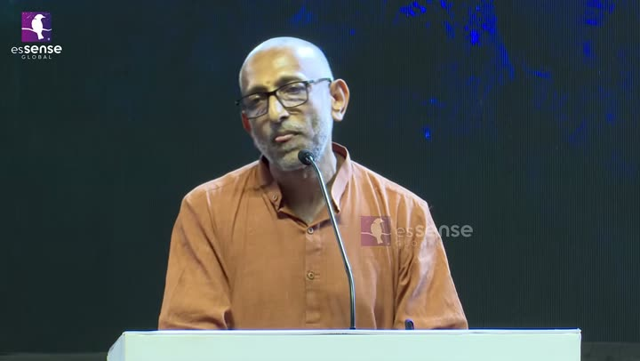
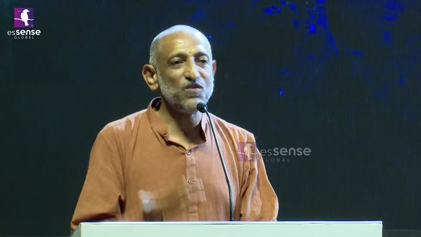
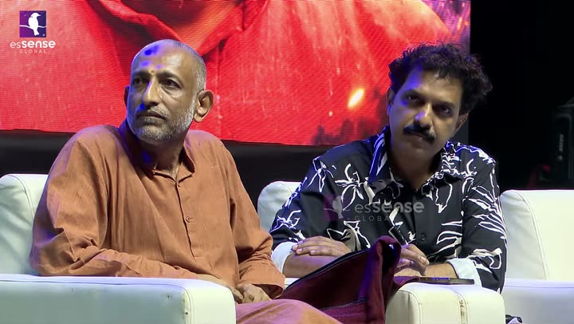
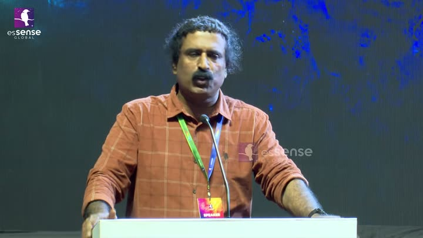
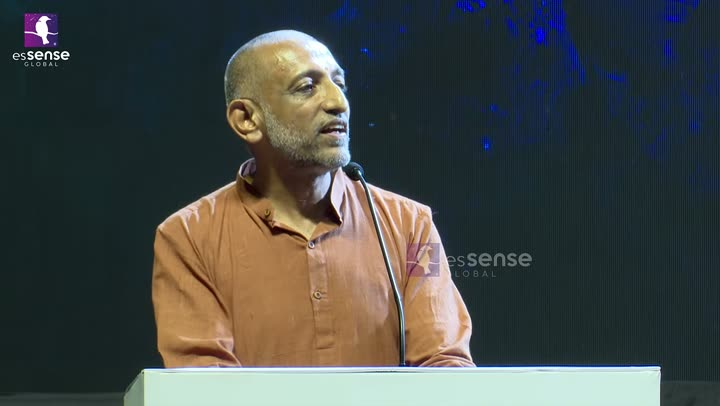

![Kaipps Cafe]()
Authored by Kaipp's AI Repo© 2026 Nishad Kaippally (Kaipps Cafe). All rights reserved.
This report was built with several private and public AI models. It is educational material: not for sale, and not to be reused or republished, including on any YouTube channel, without explicit permission.
Litmus'26 | Moderator: Rakesh V | 88 മിനിറ്റ്

Swami Adhyathmananda-യുടെ നിലപാട്: ദൈവം എന്നാൽ അറിവ്, പ്രകാശം, ഒടുവിൽ 'ബോധം'. ഉള്ളിലേക്ക് ഊളിയിട്ടിറങ്ങിയാൽ അത് സാക്ഷാത്കരിക്കാം, അത് ശാന്തിയും നിർഭയത്വവും തരും.
Ravichandran C-യുടെ നിലപാട്: ദൈവം ഭൗതിക അടിത്തറയില്ലാത്ത മനോജന്യ സങ്കല്പമാണ്, ഒരു delusion (വിഭ്രാന്തി). evidence (തെളിവ്) ഇല്ലാത്ത 'അറിവ്' അറിവല്ല.
ഉള്ളടക്കത്തിൽ RC ആണ് ജയിച്ചത്. evidence ചോദിച്ചപ്പോഴെല്ലാം Swami ഒഴിഞ്ഞുമാറി. തന്റെ ദൈവം objective (വസ്തുനിഷ്ഠം) ആയി പരിശോധിക്കാനാവില്ലെന്ന് 01:06:19-ൽ അദ്ദേഹം സ്വയം സമ്മതിക്കുകയും ചെയ്തു.
RC-യുടെ ദൗർബല്യങ്ങൾ: 'തട്ടിപ്പ്' പോലെ ആളെ ആക്രമിക്കുന്ന വാക്കുകൾ, 'ദൈവത്തെ define ചെയ്തില്ല' എന്ന record-ന് നിരക്കാത്ത ആരോപണം, source ഇല്ലാത്ത ഒരു anecdote (സംഭവകഥ).
അഞ്ചും ഒരേ രീതിയാണ്: തെളിവ് ചോദിക്കുമ്പോൾ ദൈവം പരിശോധനയ്ക്ക് എത്താത്ത ഇടത്തേക്ക് മാറും.

ഇവിടെയാണ് debate ജയിച്ചത്.

ഇവ തിരുത്തിയാൽ അടുത്ത debate കൂടുതൽ വ്യക്തമായി ജയിക്കാം.

ഇത് ഒരു സ്വാമിയുടെ മാത്രം രീതിയല്ല. 'ആത്മീയ' apologetics പൊതുവെ ഉപയോഗിക്കുന്ന playbook ആണ്.

സ്ലൈഡ് ബുക്കിലെ കാർഡുകളിൽ നിന്ന് എണ്ണിയത്; SlideBook-ൽ ഒരു കാർഡ് തിരുത്തിയാൽ ഈ കണക്കും മാറും.